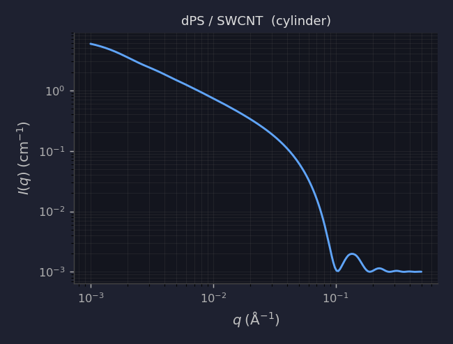
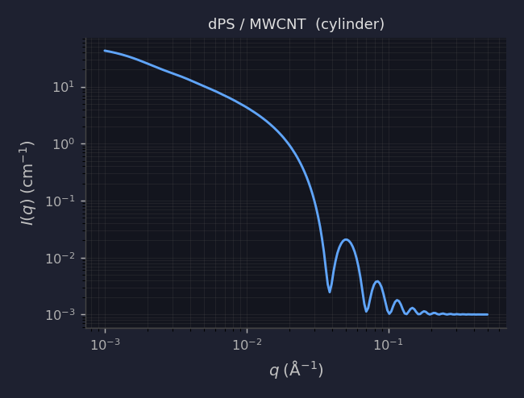
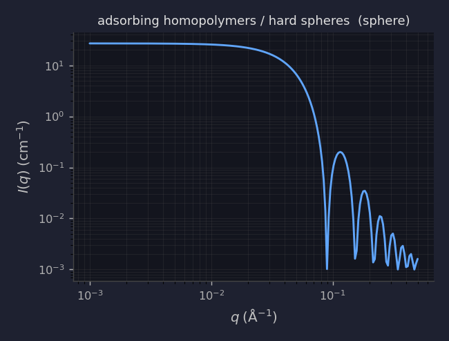
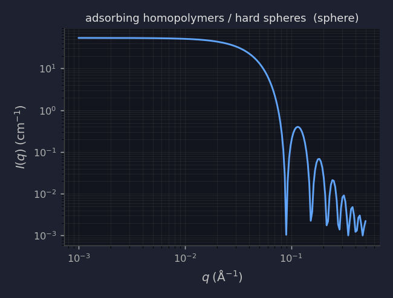
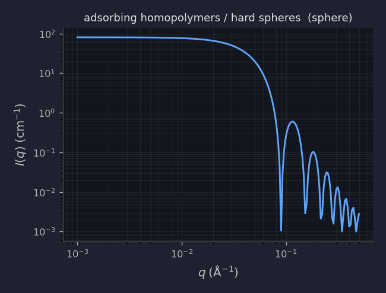
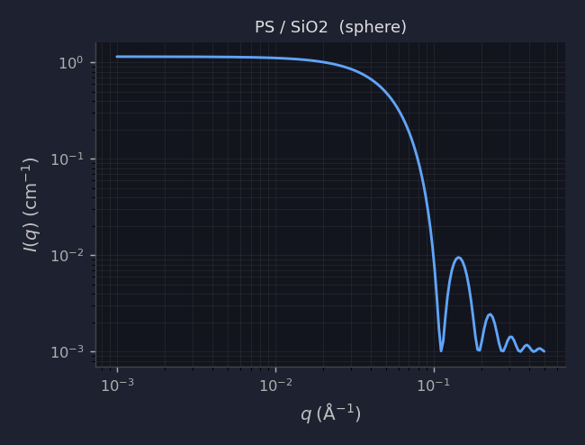
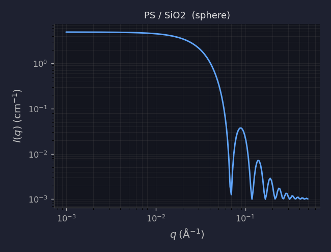

| Sample | Model | Radius | Vol. Frac. | (Δρ)² | Simulated I(q) |
|---|---|---|---|---|---|
| Journal of Polymer Science - 2021 - Senses - Viscosity reduction in polymer nanocomposites Insights from dynamic neutron_sample1 | sphere | 18 Å | 0.0100 | - |  |
| Journal of Polymer Science - 2021 - Senses - Viscosity reduction in polymer nanocomposites Insights from dynamic neutron_sample2 | sphere | 18 Å | 0.0100 | - |  |
| Journal of Polymer Science - 2021 - Senses - Viscosity reduction in polymer nanocomposites Insights from dynamic neutron_sample3 | sphere | 101 Å | 0.0100 | - |  |
| Journal of Polymer Science - 2021 - Senses - Viscosity reduction in polymer nanocomposites Insights from dynamic neutron_sample4 | sphere | 50 Å | 0.0100 | 8.07e-12 |  |
| Journal of Polymer Science - 2021 - Senses - Viscosity reduction in polymer nanocomposites Insights from dynamic neutron_sample5 | sphere | 50 Å | 0.0100 | - |  |
| Polymers for Advanced Techs - 2015 - Suresh I. - Synthesis characterization and optical properties of graphene oxide_sample1 | sphere | 2695 Å | 0.0100 | 7.18e-12 |  |
| Polymers for Advanced Techs - 2015 - Suresh I. - Synthesis characterization and optical properties of graphene oxide_sample2 | sphere | 440 Å | 0.0059 | 7.18e-12 |  |
| Polymers for Advanced Techs - 2015 - Suresh I. - Synthesis characterization and optical properties of graphene oxide_sample3 | sphere | 750 Å | 0.0029 | 7.18e-12 |  |
| Polymers for Advanced Techs - 2015 - Suresh I. - Synthesis characterization and optical properties of graphene oxide_sample4 | sphere | 625 Å | 0.0012 | 7.18e-12 |  |
| Polymers for Advanced Techs - 2015 - Suresh I. - Synthesis characterization and optical properties of graphene oxide_sample5 | sphere | 1460 Å | 0.0006 | 7.18e-12 |  |
| polymer-chain-conformations-in-cnt-ps-nanocomposites-from-small-angle-neutron-scattering_sample1 | cylinder | 37 Å | 0.0100 | 5.78e-13 |  |
| polymer-chain-conformations-in-cnt-ps-nanocomposites-from-small-angle-neutron-scattering_sample2 | cylinder | 37 Å | 0.0100 | 5.78e-13 |  |
| polymer-chain-conformations-in-cnt-ps-nanocomposites-from-small-angle-neutron-scattering_sample3 | cylinder | 37 Å | 0.0100 | 5.78e-13 |  |
| polymer-chain-conformations-in-cnt-ps-nanocomposites-from-small-angle-neutron-scattering_sample4 | cylinder | 37 Å | 0.0100 | 5.78e-13 |  |
| polymer-chain-conformations-in-cnt-ps-nanocomposites-from-small-angle-neutron-scattering_sample5 | cylinder | 37 Å | 0.0100 | 5.78e-13 |  |
| polymer-chain-conformations-in-cnt-ps-nanocomposites-from-small-angle-neutron-scattering_sample6 | cylinder | 37 Å | 0.0100 | 5.78e-13 |  |
| polymer-chain-conformations-in-cnt-ps-nanocomposites-from-small-angle-neutron-scattering_sample7 | cylinder | 37 Å | 0.0100 | 5.78e-13 |  |
| polymer-chain-conformations-in-cnt-ps-nanocomposites-from-small-angle-neutron-scattering_sample8 | cylinder | 37 Å | 0.0100 | 5.78e-13 |  |
| polymer-chain-conformations-in-cnt-ps-nanocomposites-from-small-angle-neutron-scattering_sample9 | cylinder | 100 Å | 0.0100 | 5.78e-13 |  |
| polymer-chain-conformations-in-cnt-ps-nanocomposites-from-small-angle-neutron-scattering_sample10 | cylinder | 100 Å | 0.0100 | 5.78e-13 |  |
| polymer-chain-conformations-in-cnt-ps-nanocomposites-from-small-angle-neutron-scattering_sample11 | cylinder | 100 Å | 0.0100 | 5.78e-13 |  |
| polymer-chain-conformations-in-cnt-ps-nanocomposites-from-small-angle-neutron-scattering_sample12 | cylinder | 100 Å | 0.0100 | 5.78e-13 |  |
| polymer-chain-conformations-in-cnt-ps-nanocomposites-from-small-angle-neutron-scattering_sample13 | cylinder | 100 Å | 0.0100 | 5.78e-13 |  |
| polymer-chain-conformations-in-cnt-ps-nanocomposites-from-small-angle-neutron-scattering_sample14 | cylinder | 100 Å | 0.0100 | 5.78e-13 |  |
| polymer-chain-conformations-in-cnt-ps-nanocomposites-from-small-angle-neutron-scattering_sample15 | cylinder | 100 Å | 0.0100 | 5.78e-13 |  |
| polymer-chain-conformations-in-cnt-ps-nanocomposites-from-small-angle-neutron-scattering_sample16 | cylinder | 100 Å | 0.0100 | 5.78e-13 |  |
| real-space-structure-and-scattering-patterns-of-model-polymer-nanocomposites_sample1 | sphere | 50 Å | 0.1200 | - |  |
| real-space-structure-and-scattering-patterns-of-model-polymer-nanocomposites_sample2 | sphere | 50 Å | 0.2400 | - |  |
| real-space-structure-and-scattering-patterns-of-model-polymer-nanocomposites_sample3 | sphere | 50 Å | 0.3600 | - |  |
| real-space-structure-and-scattering-patterns-of-model-polymer-nanocomposites_sample4 | sphere | 50 Å | 0.1200 | - |  |
| real-space-structure-and-scattering-patterns-of-model-polymer-nanocomposites_sample5 | sphere | 50 Å | 0.3600 | - |  |
| structure-of-polymer-layers-grafted-to-nanoparticles-in-silica-polystyrene-nanocomposites_sample1 | sphere | 40 Å | 0.0100 | 4.28e-12 |  |
| structure-of-polymer-layers-grafted-to-nanoparticles-in-silica-polystyrene-nanocomposites_sample2 | sphere | 40 Å | 0.0100 | 4.28e-12 |  |
| structure-of-polymer-layers-grafted-to-nanoparticles-in-silica-polystyrene-nanocomposites_sample3 | sphere | 40 Å | 0.0100 | 4.28e-12 |  |
| structure-of-polymer-layers-grafted-to-nanoparticles-in-silica-polystyrene-nanocomposites_sample4 | sphere | 40 Å | 0.0100 | 4.28e-12 |  |
| structure-of-polymer-layers-grafted-to-nanoparticles-in-silica-polystyrene-nanocomposites_sample5 | sphere | 40 Å | 0.0100 | 4.28e-12 |  |
| structure-of-polymer-layers-grafted-to-nanoparticles-in-silica-polystyrene-nanocomposites_sample6 | sphere | 40 Å | 0.0100 | 4.28e-12 |  |
| structure-of-polymer-layers-grafted-to-nanoparticles-in-silica-polystyrene-nanocomposites_sample7 | sphere | 40 Å | 0.0100 | 4.28e-12 |  |
| structure-of-polymer-layers-grafted-to-nanoparticles-in-silica-polystyrene-nanocomposites_sample8 | sphere | 40 Å | 0.0100 | 4.28e-12 |  |
| structure-of-polymer-layers-grafted-to-nanoparticles-in-silica-polystyrene-nanocomposites_sample9 | sphere | 40 Å | 0.0100 | 4.28e-12 |  |
| structure-of-polymer-layers-grafted-to-nanoparticles-in-silica-polystyrene-nanocomposites_sample10 | sphere | 65 Å | 0.0100 | 4.28e-12 |  |
| structure-of-polymer-layers-grafted-to-nanoparticles-in-silica-polystyrene-nanocomposites_sample11 | sphere | 65 Å | 0.0100 | 4.28e-12 |  |
| structure-of-polymer-layers-grafted-to-nanoparticles-in-silica-polystyrene-nanocomposites_sample12 | sphere | 65 Å | 0.0100 | 4.28e-12 |  |
| structure-of-polymer-layers-grafted-to-nanoparticles-in-silica-polystyrene-nanocomposites_sample13 | sphere | 65 Å | 0.0100 | 4.28e-12 |  |